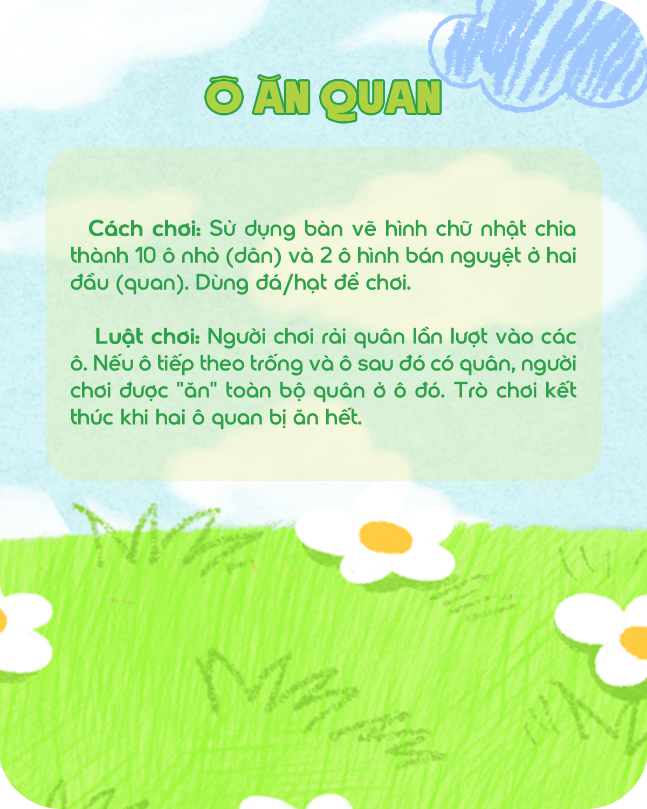
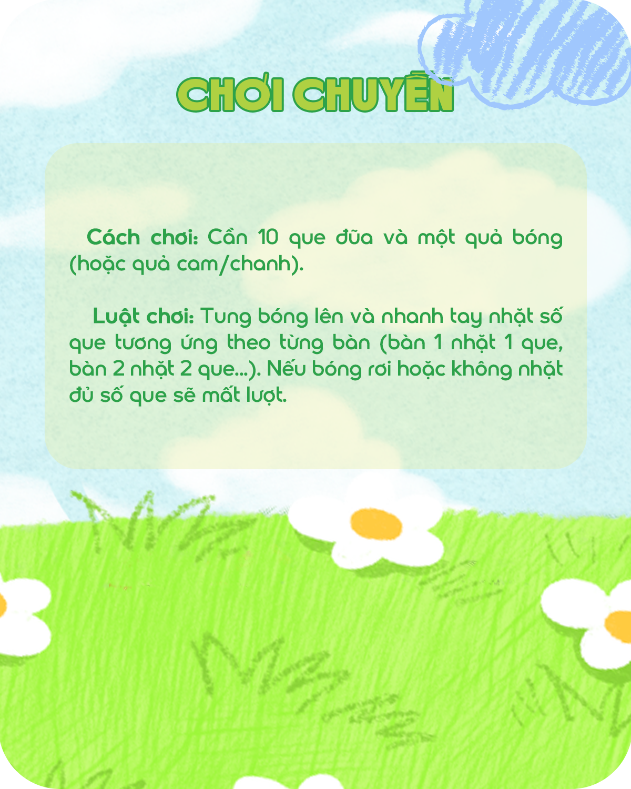

Trò chơi dân gian là một bức tranh sinh động phản chiếu các hoạt động sinh hoạt đời thường của người Việt
(như cấy lúa, chăn trâu, bắt cá, gánh nước). Khác với các hình thức giải trí cá nhân hiện đại, đây là
sản phẩm của lao động và sự sáng tạo tập thể. Nó ra đời từ nhu cầu giải trí, gắn kết cộng đồng sau những
giờ lao động vất vả.
Nguồn gốc
Trò chơi dân gian là một phần cốt lõi của di sản văn hóa phi vật thể Việt Nam. Kho tàng này không có bất
kỳ một tác giả cụ thể nào, mà được lưu giữ và phát triển thông qua phương thức truyền miệng, trao truyền
từ thế hệ này sang thế hệ khác và thường được cất lên qua những câu ca dao, đồng dao nhịp nhàng.

Dòng thời gian: Lịch sử hình thành và phát triển

Giai đoạn 1 - Khởi nguồn
Trò chơi sơ khai ra đời từ các nghi lễ nông nghiệp, tín ngưỡng phồn thực và các lễ hội cầu mùa của cư dân
Việt cổ. Mục đích ban đầu mang đậm tính tâm linh, mong mưa thuận gió hòa, vạn vật sinh sôi.
Ví dụ: Lễ hội Vua Hùng dạy dân cấy lúa (Phú Thọ) với các trò diễn xướng cấy lúa, hay các
trò thi nấu cơm, rước nước.
Giai đoạn 2 - Giao thoa
Thuận theo dòng chảy lịch sử và sự giao lưu văn hóa, trò chơi dân gian có sự phân hóa đa dạng theo đặc
trưng địa lý và tầng lớp xã hội. Có những trò chơi bình dân của xóm làng, nhưng cũng có những thú vui
chịu ảnh hưởng từ cung đình hoặc sự giao thoa văn hóa giữa các dân tộc anh em.
Ví dụ: Vùng núi phía Bắc nổi bật với ném còn, đánh cù (tù lu); Đồng bằng Bắc Bộ có bịt mắt
bắt dê, ô ăn quan. Trong khi đó, các trò như cờ người, đầu hồ lại mang dáng dấp của sự nhã nhặn, mang tính
chiến lược từ chốn cung đình.
Giai đoạn 3 - Hiện tại
Trò chơi dân gian không hề bị bỏ lại phía sau mà đang được chuyển mình mạnh mẽ. Chúng được tích hợp vào
môi trường giáo dục, trở thành chất liệu đắt giá cho các chiến dịch truyền thông thương hiệu, hay làm
điểm nhấn trong các sự kiện văn hóa, biểu diễn nghệ thuật đương đại.
Ví dụ: Những buổi học trải nghiệm, chương trình lễ hội đường phố, sân khấu hóa dân gian
và các chiến dịch truyền thông lấy cảm hứng từ trò Ô ăn quan, kéo co, nhảy dây.